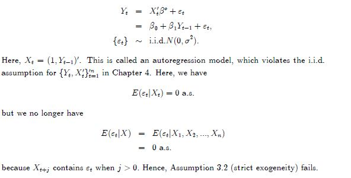
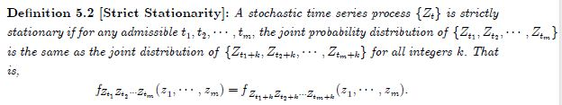
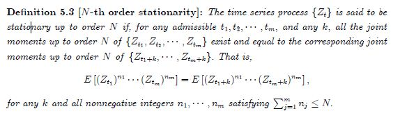
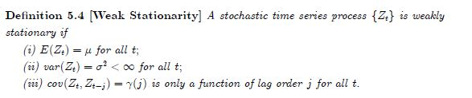
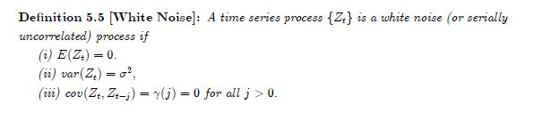
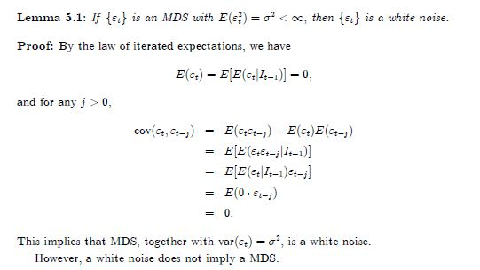
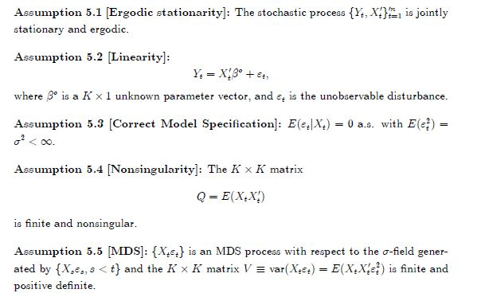
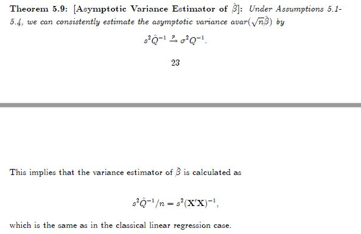
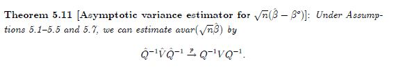
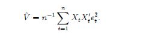

POST
LINEAR REGRESSION MODELS WITH DEPENDENT OBSERVATIONS
LINEAR REGRESSION MODELS WITH DEPENDENT OBSERVATIONS
Introduction to Time Series Analysis
- autoregression model

Stationarity
- strictly stationarity

a strictly stationary process may not have finite moments.
However,if moments and cross-moments of $${Z_t}$$exist, then they are time-invariant when $${Z_t}$$ is strictly stationary.
- [N-th order stationarity]

[Weak Stationarity]

[White Noise]



关系：





Framework and Assumptions
- assumptions

- Consistency of OLS
与之前相同，唯一不同就是在应用LLN时，iid替换为by the WLLN for ergodic stationary processes.
- Asymptotic Normality of OLS
与之前相同，唯一不同就是在应用CLT时，iid替换为By the CLT of stationary ergodic MDS processes
- Asymptotic Variance Estimator for OLS



其他都一样，不同之处在于把iid替换成theWLLN for ergodic stationary processes和MDS